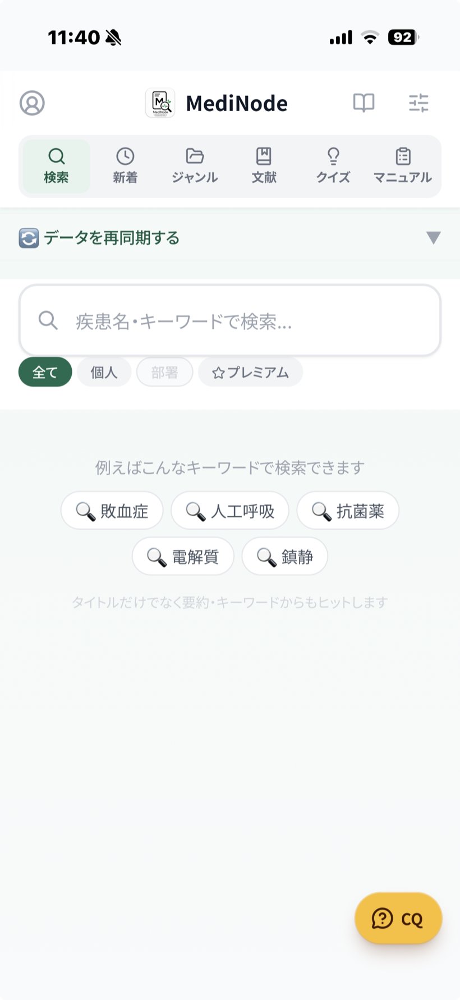
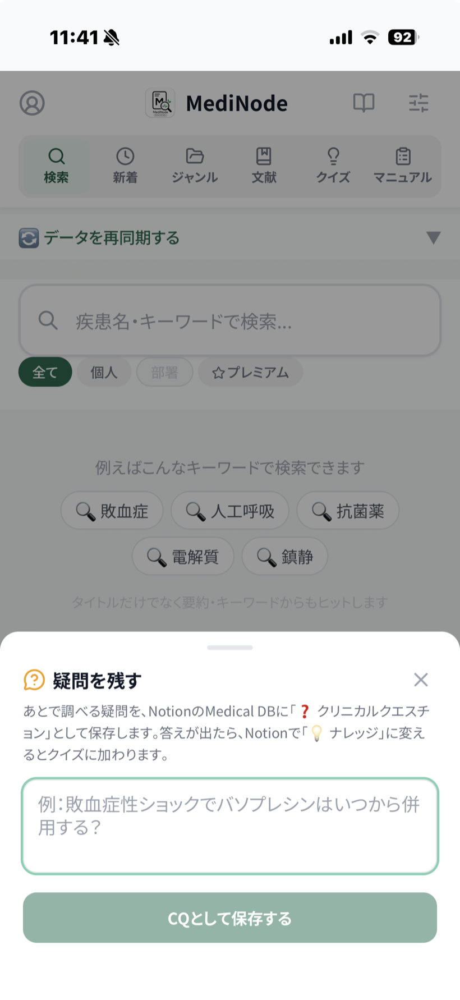

調べたことも、文献も、当直の学びも。いつものNotionに書いたあなたの記録が、現場で引き出せる「第二の脳」に変わります。入力し直す手間はありません。
アプリは無料。体験はメールアドレスひとつ、Notion設定もコードもカードもいりません。
📖 note 集中治療医の「AI時代の勉強術」で紹介中 →MediNodeは、自分のNotionをつないで使う基本機能がずっと無料のアプリです。その上にある、専門医が更新するプレミアムナレッジのおためし期間を、公開を記念してのばしています——登録だけで1週間、紹介かカードで2週間、noteなら1ヶ月。
メールひとつ・カード不要
カード不要
期間中の解約は無料
紹介した人にも +14日
同僚を誘うと、二人ともお得に。
アプリの設定画面に、あなただけの紹介コードが表示されます。同僚に伝えるだけ。お相手は2週間無料でためせて、あなたのプレミアム期間も14日のびます。むずかしい手続きはいりません。
※ SNSなど公開の場で紹介いただく場合は、紹介特典を受け取っている旨（「#PR」「紹介特典あり」等）を一言添えてください。
おためしが終わっても、アプリと自分のNotionの検索はそのまま無料で使えます。勝手に課金されることはありません。
メールアドレスひとつで、30秒ではじめられます。
「あの時、調べておけばよかった」
一度浮かんだ臨床の疑問は、また同じ場面で戻ってくる。配合変化、腎機能と用量、採血スピッツの順番——。
調べたメモはどこかに散らばり、いざという時に引き出せない。記録用と検索用を二重に書くのも続かない。
当直中にふと湧いた疑問も、画面右下の「CQ」から書いて残すだけ。あなたのNotionに「❓クリニカルクエスチョン」として貯まっていきます。
答えが見つかったら「💡ナレッジ」に変えるだけ。そのまま、クイズの一問になります。
❓ 残す → 💡 答えが出たら → 🧠 クイズに

MediNodeは新しい入力欄を増やしません。あなたのNotionに繋ぐだけで、記録が検索データベースとクイズに変わります。
疾患名・キーワードで横断検索。シンプルモードならNotionを直すと次の検索から即反映されます。
ためたナレッジが、シャッフル出題の一問一答に。集めた知識が、自分専用の問題集になります。
調べたこと・文献・メモを書く
検索・新着・クイズに変わる
役割がちがいます。書く・貯める・深掘りはあちらが得意。MediNodeは、現場で「引く」に絞ったアプリです。
調べたことをゆっくり書く。PDFや文献を放り込む。蓄積の場所は、いままでどおりNotionのままです。MediNodeのために書き直す必要はありません。
読み込ませた資料に質問して、答えを受け取る。ノートブック単位の深掘りは、あちらが向いています。ただし、ノートブックをまたいだ検索は単体ではできません。
当直の合間に、数秒で目当ての1枚へ。タイトルだけでなく要約・キーワードも検索対象で、メモが数百枚に増えても速さが変わりません。
そして「全て」タブは、自分のメモ・部署の共有DB・専門医のナレッジを、ひとつの検索窓でまとめて引きます。部署と専門医というふたつの知識源は、NotionにもNotebookLMにもありません。
迷ったら、体験から。自分のNotionは、あとからいつでも足せます。
アプリを開いて、メールアドレスを登録するだけ。専門医の救急・集中治療ナレッジを7日間そのまま検索・クイズできます。コードもカードもいりません（8/18までの公開記念。通常3日間）。
いつものNotion（または無料テンプレ）をつなぐと、自分の知識がそのまま検索DBと一問一答に。書き直しはいりません。
体験と自分のNotionは併用できます。部署の共有DBにもつながります。
探す・新着・分類・文献・想起。ひとつの画面で完結します。
キーワード検索＋所有者フィルタ（全て／個人／部署／プレミアム）で、必要な知識を一瞬で。
最終更新の新しい順に表示。直近で書いた記録をすぐ確認。
循環・呼吸器・神経・感染症など、ジャンル別にブラウズ。
著者・ジャーナル・発行年・エビデンスレベルで参考文献を管理。
ナレッジがそのままシャッフル出題の一問一答に（最大20問）。
#3人工呼吸中ICU患者で早期離床（48–72h以内）はICU-AWを減らすか？
答えを見る使わないタブ（クイズなど）や右下の「CQ」ボタンは、設定でいつでも隠せます。自分の使い方に合わせて、画面をすっきり保てます。
すぐ試すならシンプルモード、速さを求めるならパワーモード。用途で選べます。
Notionを直接検索。追加の設定なしで、直したらすぐ反映。
Algoliaに同期して、さらに速い検索へ。
捕まえて、自分の言葉にして、必要なときに引き出す。ひとつの勉強術が、そのまま画面になっています。
まだ答えの出ていない疑問を、その場で取りこぼさず残す。
確認済みの知識に昇格。クイズの出題対象になります。
たまった知識を体系的な解説へ。ジャンルごとに整理。
思い出して、初めて使える知識に。MediNodeが担う最後のピース。
「調べたのに、思い出せない」をなくすための知識の育て方。その考え方を、集中治療医がnoteに書いています。MediNodeは、それを実際に回すための道具です。
AIは「答えをくれる相手」ではなく、自分の知識を育てる速度を上げるパートナー。読んで終わりにしない、引き出せる知識のつくり方を紹介しています。
noteを読む日々の知識の中身は、手元に。設定だけを暗号化して同期します。
検索ワードや本文を、サーバーに残しません。
接続設定は暗号化して保存。別の端末でもそのまま。
ホーム画面に追加して、ワンタップで起動。
導入・データベース・プレミアムの仕組みを、それぞれのページで一つずつ確認できます。
調べたことも、文献も、当直の学びも。アプリは無料、メールアドレスひとつ。専門医ナレッジの体験も、そのまま始まります。
今すぐ体験する（無料） 医療者全般向け・スマホでもPCでも使えます